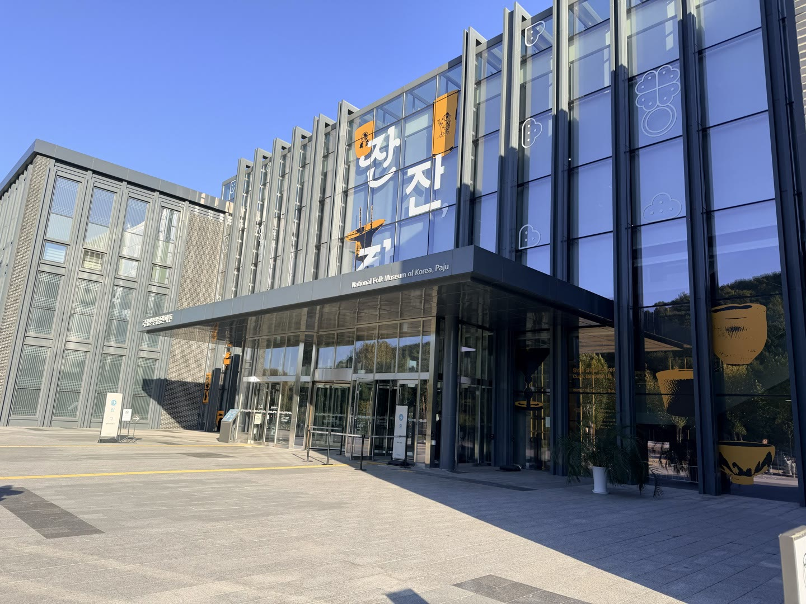
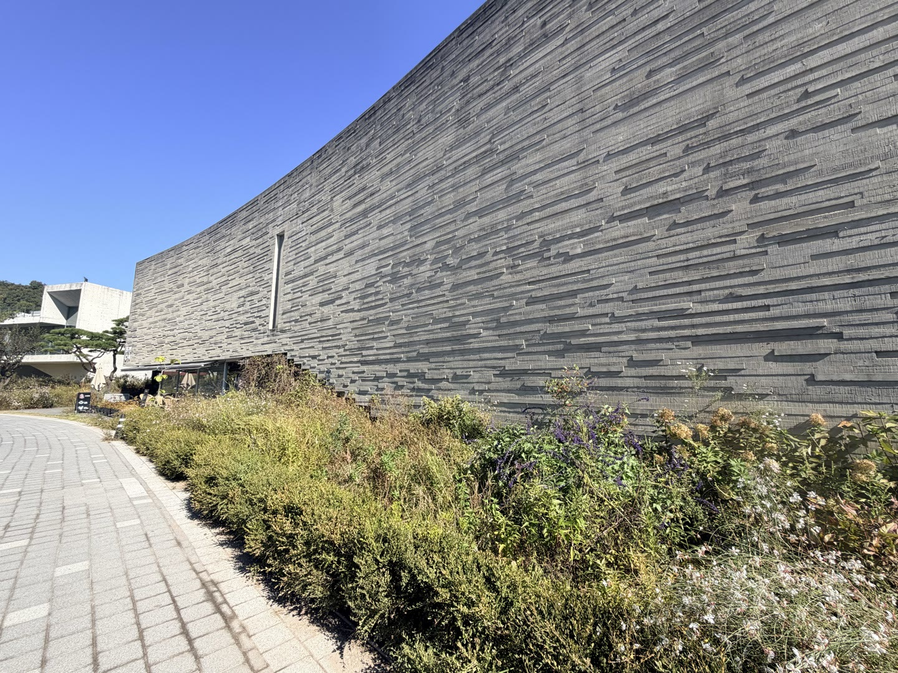
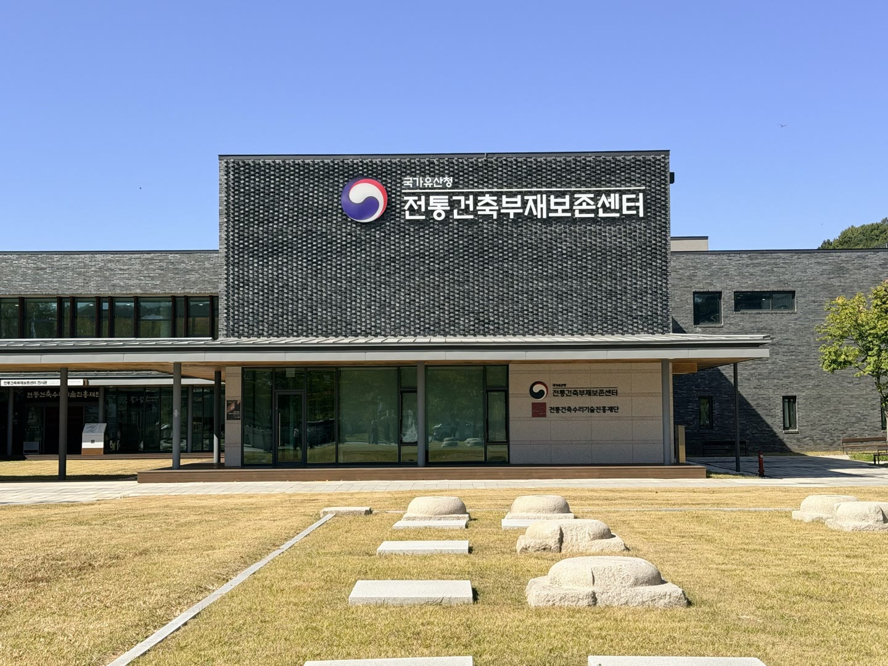

· 파주 · 완료
국립민속박물관장님과 함께하는 파주 팸투어
헤이리예술마을의 박물관과 미술관을 둘러보고, 전통건축부재보존센터 전시해설과 국립민속박물관 파주 견학·간담회에 함께했습니다.
당일 일정
- 08:50–09:00출석 점검 및 출발
- 09:00–10:00이동
- 10:00–11:40헤이리예술마을 자율 시찰
- 11:40–12:50통일동산두부마을 점심 및 휴식
- 12:50–14:00전통건축부재보존센터 전시해설
- 14:00–15:30국립민속박물관 파주 견학
- 15:30–16:20간담회 및 질의응답
- 16:20–17:30이동 및 귀가



영상 순서: 한국근현대사박물관 입구·생활사 전시·전시실 → 헤이리 미술관 외관·건축 풍경 → 전통건축부재보존센터 외관·목구조 전시 → 국립민속박물관 파주 외관·열린 수장고·소장품.